Every value in this system was read from source in origin/integration and then verified against these screenshots, taken from a build of that same commit on an iPhone 17 Pro Max simulator. Nothing here came from a brand brief.
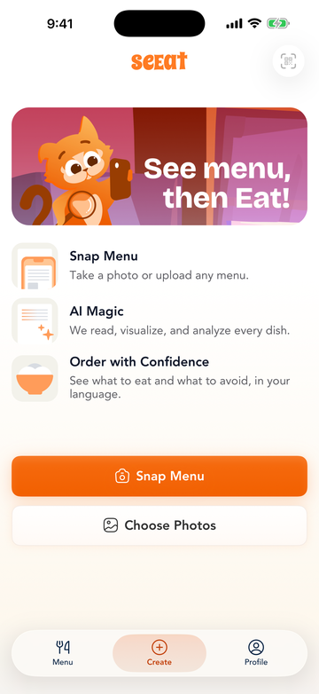
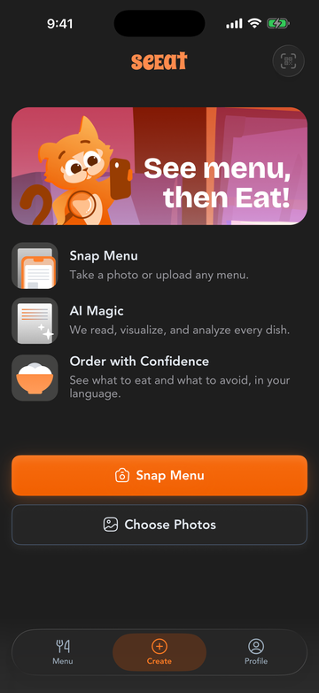
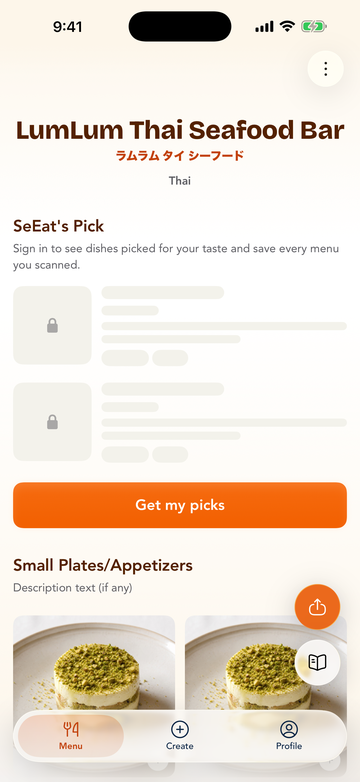
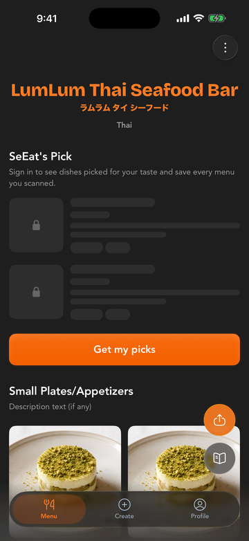
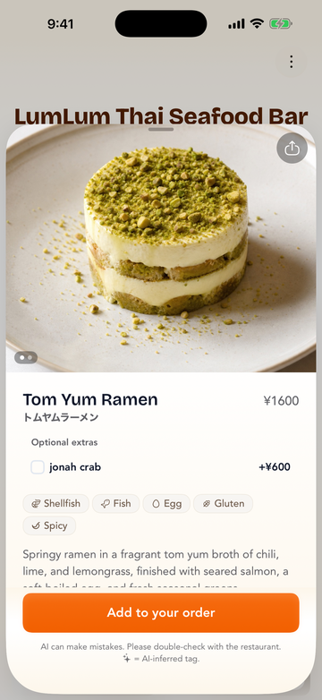
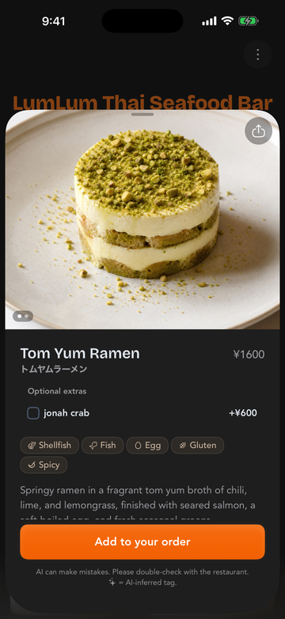
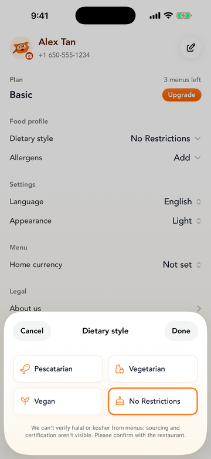
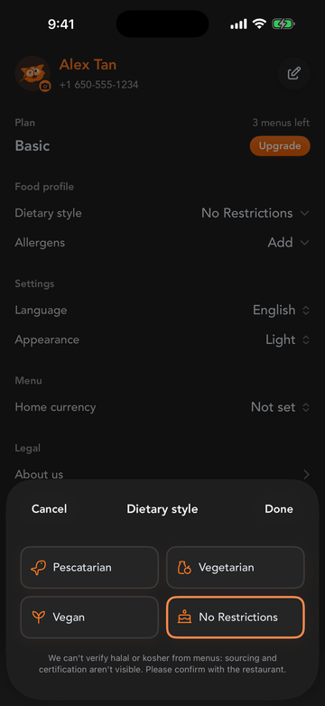
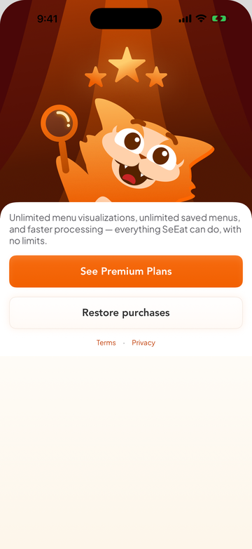
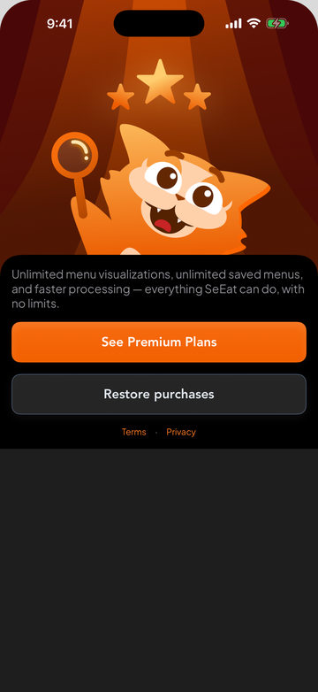
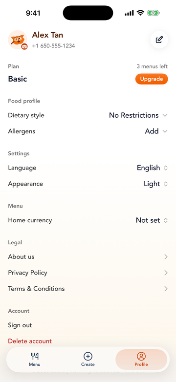
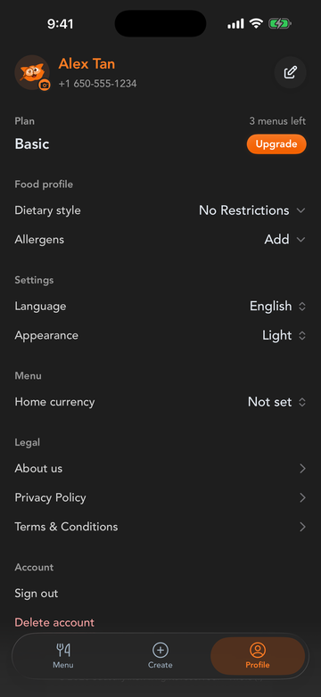
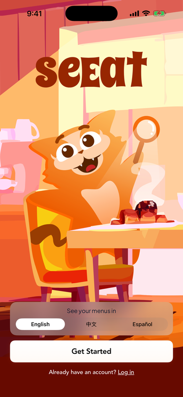
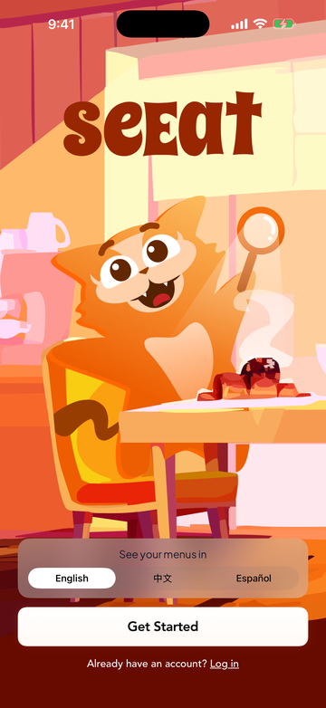
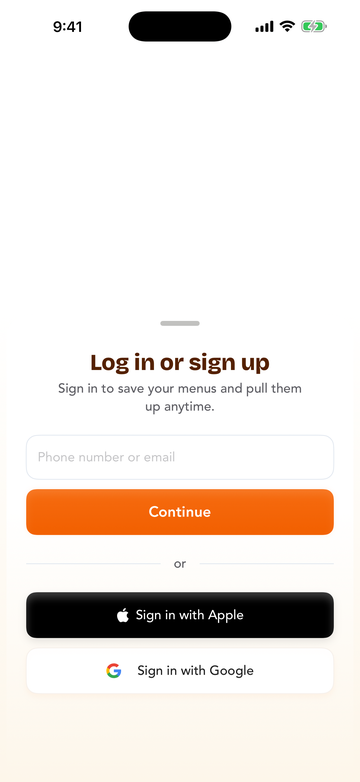
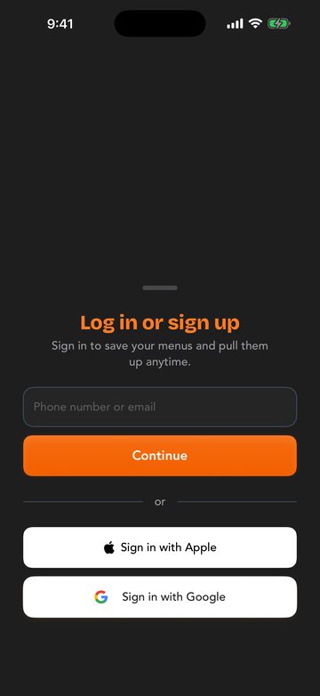
xcrun simctl launch <udid> xyz.causally.seeat.ios -debugScene item-detail -debugTheme dark. There are 28 scenes, 2 themes, 7 auth states and 3 locales — see Debug/DebugLaunchConfiguration.swift. Those canonical flags are recent; a stale simulator build will silently ignore them and hand you identical screenshots, which is worth checking before trusting a capture.muted rather than background, and the CTA gradient does not change between themes.